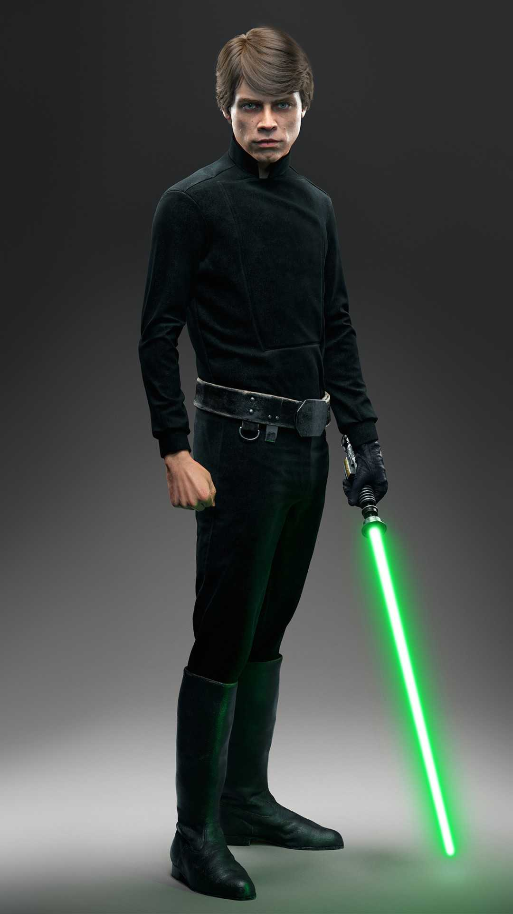

Luke Skywalker
Luke Skywalker é um dos personagens mais icônicos do universo Star Wars. Filho de Anakin Skywalker (Darth Vader) e Padmé Amidala, Luke cresceu em Tatooine sem saber de sua origem Jedi. Com a ajuda de Obi-Wan Kenobi, Han Solo, Leia Organa e outros aliados, ele se tornou um dos maiores Jedi da galáxia, sendo fundamental para a queda do Império e a redenção de seu pai. Anos depois, Luke treinou uma nova geração de Jedi e enfrentou novos desafios para manter o equilíbrio da Força.
Melhores aparições:
- Episódio IV: Quando descobre seu destino e destrói a Estrela da Morte.
- Episódio V: O treinamento com Yoda e o duelo com Darth Vader.
- Episódio VI: A redenção de seu pai e a vitória sobre o Imperador.
- Episódio VIII: O retorno lendário em Ahch-To e o confronto final com Kylo Ren.